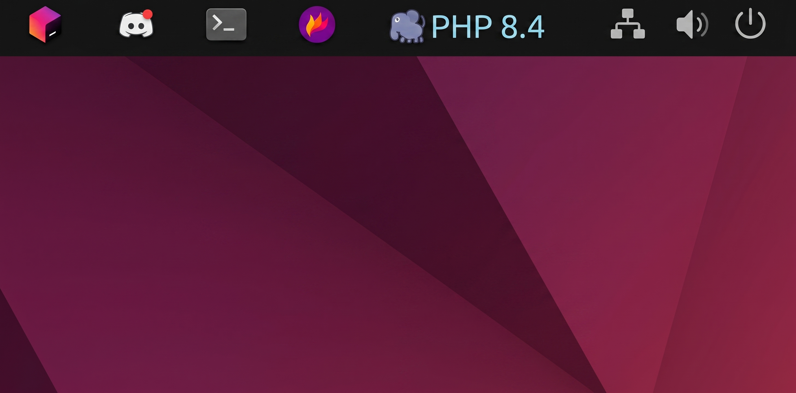
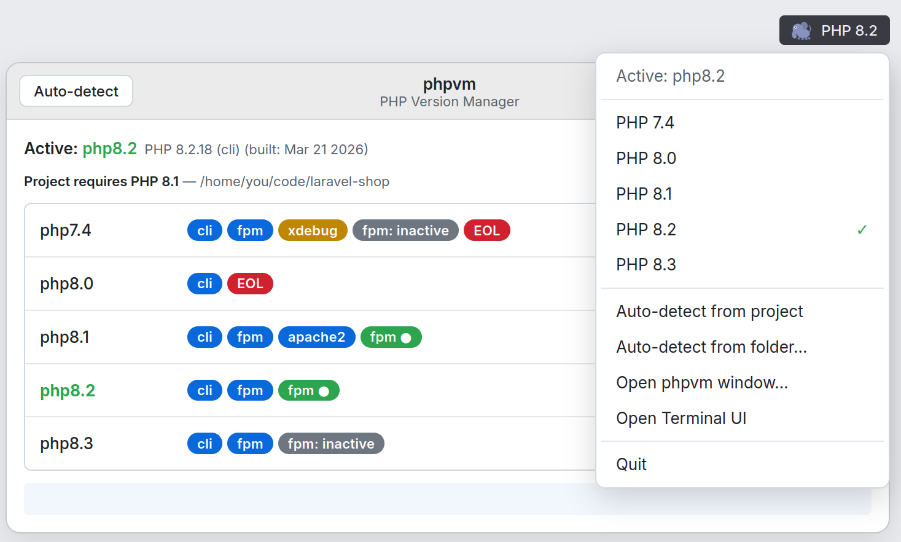
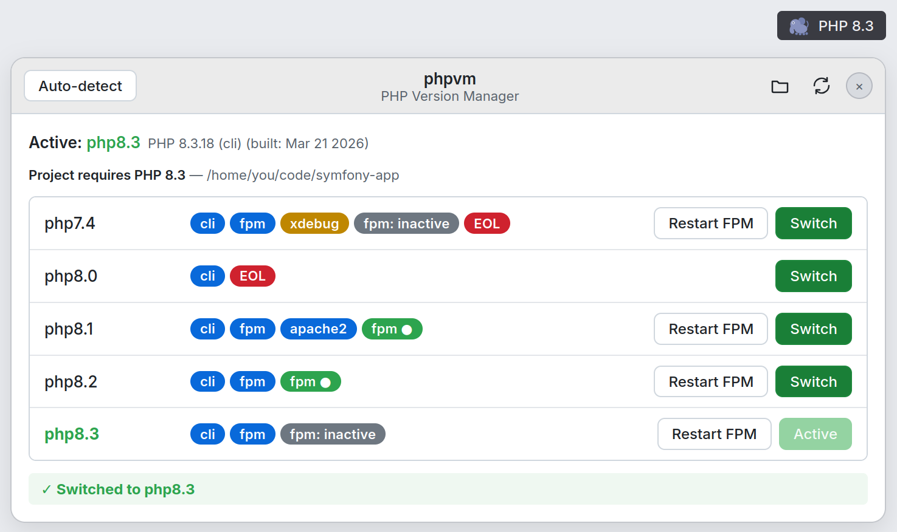
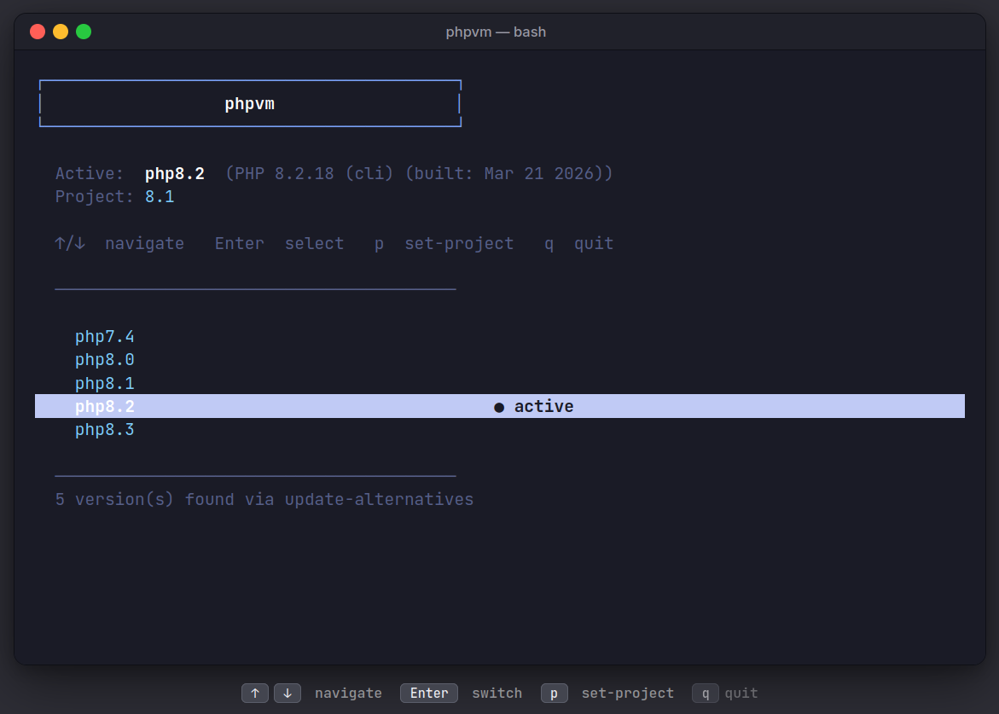

phpvm
Four feature spotlights
Taskbar indicator, Tray menu, Full GUI window, and TUI picker. Each one rings the bit that shows the active PHP version.
Taskbar indicator, Tray menu, Full GUI window, and TUI picker. Each one rings the bit that shows the active PHP version.


phpvm --auto on every cd
no shell reload required

Auto-detect from project reads .php-version for the current cwd
or pick a folder explicitly

cli · fpm · apache2 · xdebug · EOL
FPM status pill flips live as you switch

p pin as project version · q bail
uses update-alternatives under the hood
 rijverse
rijverse